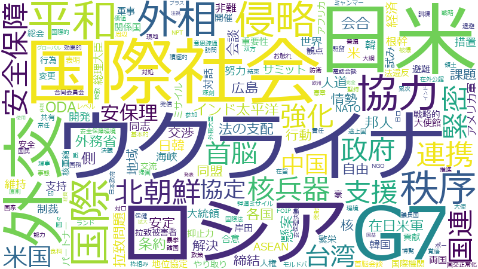

林芳正

ウクライナ 、ロシア 、日米 、連携 、協力 、国際 、G7 、国際社会 、政府 、支援 、強化 、外交 、平和 、安全保障 、侵略 、側 、中国 、地域 、北朝鮮 、緊密 、秩序 、課題 、国連 、米国 、協定 、解決 、台湾 、措置 、各国 、首脳 、会合 、核兵器 、経済 、外相 、安定 、条約 、世界 、総理大臣 、行動 、外務省 、情勢 、開発 、努力 、自由 、観点 、維持 、核 、交渉 、邦人 、安全 、インド太平洋 、安保理 、締結 、開催 、環境 、米 、ODA 、重要性 、法の支配 、人道 、変更 、対話 、国民 、積極的 、共有 、推進 、合意 、根幹 、サミット 、行為 、岸田 、広島 、拉致問題 、制裁 、同盟 、貢献 、韓国 、基本的 、原則 、在日米軍 、会談 、懸案 、政策 、参加 、避難 、大統領 、日韓 、責任 、戦略的 、やり取り 、事態 、表明 、体制 、軍事 、効果的 、拡大 、支持 、人権 、価値 、戦略
日米 、ウクライナ 、ロシア 、国際社会 、G7 、外交 、平和 、国際 、協力 、侵略 、外相 、秩序 、北朝鮮 、連携 、安全保障 、核兵器 、政府 、緊密 、強化 、支援 、国連 、首脳 、台湾 、米国 、中国 、協定 、安保理 、インド太平洋 、側 、ODA 、会合 、邦人 、条約 、法の支配 、各国 、在日米軍 、懸案 、外務省 、拉致問題 、解決 、日韓 、人道 、核 、安定 、同盟 、地域 、情勢 、課題 、行動 、米 、締結 、自由 、会談 、広島 、交渉 、経済 、サミット 、根幹 、同志 、総理大臣 、対話 、措置 、制裁 、努力 、世界 、開発 、海峡 、非難 、大統領 、維持 、ASEAN 、韓国 、韓 、アメリカ軍 、支持 、試み 、地位協定 、戦略的 、関係国 、重要性 、両国 、軍事 、繁栄 、合意 、大使館 、避難 、開催 、抑止力 、ミサイル 、NATO 、岸田 、パートナー 、国際機関 、拉致被害者 、安全 、やり取り 、貢献 、変更 、交流 、総会
日米
| 言及回数 | 1059回 |
| 言及発言者数（参考人を含む） | 404人 |
ウクライナ
| 言及回数 | 1401回 |
| 言及発言者数（参考人を含む） | 871人 |
ロシア
| 言及回数 | 1241回 |
| 言及発言者数（参考人を含む） | 783人 |
国際社会
| 言及回数 | 979回 |
| 言及発言者数（参考人を含む） | 515人 |
G7
| 言及回数 | 983回 |
| 言及発言者数（参考人を含む） | 570人 |
外交
| 言及回数 | 800回 |
| 言及発言者数（参考人を含む） | 540人 |
平和
| 言及回数 | 763回 |
| 言及発言者数（参考人を含む） | 525人 |
国際
| 言及回数 | 993回 |
| 言及発言者数（参考人を含む） | 1019人 |
協力
| 言及回数 | 1019回 |
| 言及発言者数（参考人を含む） | 1284人 |
侵略
| 言及回数 | 601回 |
| 言及発言者数（参考人を含む） | 503人 |
外相
| 言及回数 | 387回 |
| 言及発言者数（参考人を含む） | 134人 |
秩序
| 言及回数 | 527回 |
| 言及発言者数（参考人を含む） | 383人 |
北朝鮮
| 言及回数 | 528回 |
| 言及発言者数（参考人を含む） | 388人 |
連携
| 言及回数 | 1030回 |
| 言及発言者数（参考人を含む） | 1460人 |
安全保障
| 言及回数 | 703回 |
| 言及発言者数（参考人を含む） | 791人 |
核兵器
| 言及回数 | 406回 |
| 言及発言者数（参考人を含む） | 209人 |
政府
| 言及回数 | 966回 |
| 言及発言者数（参考人を含む） | 1432人 |
緊密
| 言及回数 | 528回 |
| 言及発言者数（参考人を含む） | 464人 |
強化
| 言及回数 | 884回 |
| 言及発言者数（参考人を含む） | 1335人 |
支援
| 言及回数 | 965回 |
| 言及発言者数（参考人を含む） | 1542人 |
国連
| 言及回数 | 519回 |
| 言及発言者数（参考人を含む） | 504人 |
首脳
| 言及回数 | 413回 |
| 言及発言者数（参考人を含む） | 294人 |
台湾
| 言及回数 | 439回 |
| 言及発言者数（参考人を含む） | 376人 |
米国
| 言及回数 | 517回 |
| 言及発言者数（参考人を含む） | 610人 |
中国
| 言及回数 | 533回 |
| 言及発言者数（参考人を含む） | 720人 |
協定
| 言及回数 | 448回 |
| 言及発言者数（参考人を含む） | 494人 |
安保理
| 言及回数 | 281回 |
| 言及発言者数（参考人を含む） | 124人 |
インド太平洋
| 言及回数 | 285回 |
| 言及発言者数（参考人を含む） | 170人 |
側
| 言及回数 | 597回 |
| 言及発言者数（参考人を含む） | 1078人 |
ODA
| 言及回数 | 265回 |
| 言及発言者数（参考人を含む） | 137人 |
会合
| 言及回数 | 409回 |
| 言及発言者数（参考人を含む） | 520人 |
邦人
| 言及回数 | 288回 |
| 言及発言者数（参考人を含む） | 205人 |
条約
| 言及回数 | 378回 |
| 言及発言者数（参考人を含む） | 504人 |
法の支配
| 言及回数 | 262回 |
| 言及発言者数（参考人を含む） | 189人 |
各国
| 言及回数 | 422回 |
| 言及発言者数（参考人を含む） | 712人 |
在日米軍
| 言及回数 | 215回 |
| 言及発言者数（参考人を含む） | 101人 |
懸案
| 言及回数 | 214回 |
| 言及発言者数（参考人を含む） | 100人 |
外務省
| 言及回数 | 346回 |
| 言及発言者数（参考人を含む） | 470人 |
拉致問題
| 言及回数 | 227回 |
| 言及発言者数（参考人を含む） | 140人 |
解決
| 言及回数 | 440回 |
| 言及発言者数（参考人を含む） | 976人 |
日韓
| 言及回数 | 202回 |
| 言及発言者数（参考人を含む） | 127人 |
人道
| 言及回数 | 253回 |
| 言及発言者数（参考人を含む） | 275人 |
核
| 言及回数 | 297回 |
| 言及発言者数（参考人を含む） | 438人 |
安定
| 言及回数 | 387回 |
| 言及発言者数（参考人を含む） | 815人 |
同盟
| 言及回数 | 221回 |
| 言及発言者数（参考人を含む） | 202人 |
地域
| 言及回数 | 529回 |
| 言及発言者数（参考人を含む） | 1422人 |
情勢
| 言及回数 | 345回 |
| 言及発言者数（参考人を含む） | 700人 |
課題
| 言及回数 | 524回 |
| 言及発言者数（参考人を含む） | 1478人 |
行動
| 言及回数 | 350回 |
| 言及発言者数（参考人を含む） | 800人 |
米
| 言及回数 | 267回 |
| 言及発言者数（参考人を含む） | 436人 |
締結
| 言及回数 | 281回 |
| 言及発言者数（参考人を含む） | 498人 |
自由
| 言及回数 | 331回 |
| 言及発言者数（参考人を含む） | 764人 |
会談
| 言及回数 | 214回 |
| 言及発言者数（参考人を含む） | 260人 |
広島
| 言及回数 | 227回 |
| 言及発言者数（参考人を含む） | 318人 |
交渉
| 言及回数 | 288回 |
| 言及発言者数（参考人を含む） | 594人 |
経済
| 言及回数 | 405回 |
| 言及発言者数（参考人を含む） | 1151人 |
サミット
| 言及回数 | 228回 |
| 言及発言者数（参考人を含む） | 337人 |
根幹
| 言及回数 | 234回 |
| 言及発言者数（参考人を含む） | 371人 |
同志
| 言及回数 | 179回 |
| 言及発言者数（参考人を含む） | 163人 |
総理大臣
| 言及回数 | 353回 |
| 言及発言者数（参考人を含む） | 947人 |
対話
| 言及回数 | 250回 |
| 言及発言者数（参考人を含む） | 459人 |
措置
| 言及回数 | 428回 |
| 言及発言者数（参考人を含む） | 1325人 |
制裁
| 言及回数 | 224回 |
| 言及発言者数（参考人を含む） | 371人 |
努力
| 言及回数 | 334回 |
| 言及発言者数（参考人を含む） | 962人 |
世界
| 言及回数 | 358回 |
| 言及発言者数（参考人を含む） | 1090人 |
開発
| 言及回数 | 340回 |
| 言及発言者数（参考人を含む） | 1027人 |
海峡
| 言及回数 | 142回 |
| 言及発言者数（参考人を含む） | 99人 |
非難
| 言及回数 | 183回 |
| 言及発言者数（参考人を含む） | 257人 |
大統領
| 言及回数 | 205回 |
| 言及発言者数（参考人を含む） | 377人 |
維持
| 言及回数 | 326回 |
| 言及発言者数（参考人を含む） | 1091人 |
ASEAN
| 言及回数 | 141回 |
| 言及発言者数（参考人を含む） | 127人 |
韓国
| 言及回数 | 220回 |
| 言及発言者数（参考人を含む） | 498人 |
韓
| 言及回数 | 136回 |
| 言及発言者数（参考人を含む） | 111人 |
アメリカ軍
| 言及回数 | 177回 |
| 言及発言者数（参考人を含む） | 281人 |
支持
| 言及回数 | 186回 |
| 言及発言者数（参考人を含む） | 325人 |
試み
| 言及回数 | 157回 |
| 言及発言者数（参考人を含む） | 198人 |
地位協定
| 言及回数 | 130回 |
| 言及発言者数（参考人を含む） | 99人 |
戦略的
| 言及回数 | 199回 |
| 言及発言者数（参考人を含む） | 406人 |
関係国
| 言及回数 | 137回 |
| 言及発言者数（参考人を含む） | 128人 |
重要性
| 言及回数 | 263回 |
| 言及発言者数（参考人を含む） | 808人 |
両国
| 言及回数 | 149回 |
| 言及発言者数（参考人を含む） | 186人 |
軍事
| 言及回数 | 191回 |
| 言及発言者数（参考人を含む） | 409人 |
繁栄
| 言及回数 | 132回 |
| 言及発言者数（参考人を含む） | 132人 |
合意
| 言及回数 | 234回 |
| 言及発言者数（参考人を含む） | 684人 |
大使館
| 言及回数 | 147回 |
| 言及発言者数（参考人を含む） | 203人 |
避難
| 言及回数 | 206回 |
| 言及発言者数（参考人を含む） | 530人 |
開催
| 言及回数 | 280回 |
| 言及発言者数（参考人を含む） | 997人 |
抑止力
| 言及回数 | 157回 |
| 言及発言者数（参考人を含む） | 274人 |
ミサイル
| 言及回数 | 167回 |
| 言及発言者数（参考人を含む） | 332人 |
NATO
| 言及回数 | 136回 |
| 言及発言者数（参考人を含む） | 176人 |
岸田
| 言及回数 | 227回 |
| 言及発言者数（参考人を含む） | 709人 |
パートナー
| 言及回数 | 143回 |
| 言及発言者数（参考人を含む） | 219人 |
国際機関
| 言及回数 | 148回 |
| 言及発言者数（参考人を含む） | 246人 |
拉致被害者
| 言及回数 | 114回 |
| 言及発言者数（参考人を含む） | 97人 |
安全
| 言及回数 | 287回 |
| 言及発言者数（参考人を含む） | 1137人 |
やり取り
| 言及回数 | 198回 |
| 言及発言者数（参考人を含む） | 554人 |
貢献
| 言及回数 | 221回 |
| 言及発言者数（参考人を含む） | 724人 |
変更
| 言及回数 | 250回 |
| 言及発言者数（参考人を含む） | 920人 |
交流
| 言及回数 | 184回 |
| 言及発言者数（参考人を含む） | 481人 |
総会
| 言及回数 | 138回 |
| 言及発言者数（参考人を含む） | 215人 |
ウクライナ
| 言及回数 | 1401回 |
| 言及発言者数（参考人を含む） | 871人 |
ロシア
| 言及回数 | 1241回 |
| 言及発言者数（参考人を含む） | 783人 |
日米
| 言及回数 | 1059回 |
| 言及発言者数（参考人を含む） | 404人 |
連携
| 言及回数 | 1030回 |
| 言及発言者数（参考人を含む） | 1460人 |
協力
| 言及回数 | 1019回 |
| 言及発言者数（参考人を含む） | 1284人 |
国際
| 言及回数 | 993回 |
| 言及発言者数（参考人を含む） | 1019人 |
G7
| 言及回数 | 983回 |
| 言及発言者数（参考人を含む） | 570人 |
国際社会
| 言及回数 | 979回 |
| 言及発言者数（参考人を含む） | 515人 |
政府
| 言及回数 | 966回 |
| 言及発言者数（参考人を含む） | 1432人 |
支援
| 言及回数 | 965回 |
| 言及発言者数（参考人を含む） | 1542人 |
強化
| 言及回数 | 884回 |
| 言及発言者数（参考人を含む） | 1335人 |
外交
| 言及回数 | 800回 |
| 言及発言者数（参考人を含む） | 540人 |
平和
| 言及回数 | 763回 |
| 言及発言者数（参考人を含む） | 525人 |
安全保障
| 言及回数 | 703回 |
| 言及発言者数（参考人を含む） | 791人 |
侵略
| 言及回数 | 601回 |
| 言及発言者数（参考人を含む） | 503人 |
側
| 言及回数 | 597回 |
| 言及発言者数（参考人を含む） | 1078人 |
中国
| 言及回数 | 533回 |
| 言及発言者数（参考人を含む） | 720人 |
地域
| 言及回数 | 529回 |
| 言及発言者数（参考人を含む） | 1422人 |
北朝鮮
| 言及回数 | 528回 |
| 言及発言者数（参考人を含む） | 388人 |
緊密
| 言及回数 | 528回 |
| 言及発言者数（参考人を含む） | 464人 |
秩序
| 言及回数 | 527回 |
| 言及発言者数（参考人を含む） | 383人 |
課題
| 言及回数 | 524回 |
| 言及発言者数（参考人を含む） | 1478人 |
国連
| 言及回数 | 519回 |
| 言及発言者数（参考人を含む） | 504人 |
米国
| 言及回数 | 517回 |
| 言及発言者数（参考人を含む） | 610人 |
協定
| 言及回数 | 448回 |
| 言及発言者数（参考人を含む） | 494人 |
解決
| 言及回数 | 440回 |
| 言及発言者数（参考人を含む） | 976人 |
台湾
| 言及回数 | 439回 |
| 言及発言者数（参考人を含む） | 376人 |
措置
| 言及回数 | 428回 |
| 言及発言者数（参考人を含む） | 1325人 |
各国
| 言及回数 | 422回 |
| 言及発言者数（参考人を含む） | 712人 |
首脳
| 言及回数 | 413回 |
| 言及発言者数（参考人を含む） | 294人 |
会合
| 言及回数 | 409回 |
| 言及発言者数（参考人を含む） | 520人 |
核兵器
| 言及回数 | 406回 |
| 言及発言者数（参考人を含む） | 209人 |
経済
| 言及回数 | 405回 |
| 言及発言者数（参考人を含む） | 1151人 |
外相
| 言及回数 | 387回 |
| 言及発言者数（参考人を含む） | 134人 |
安定
| 言及回数 | 387回 |
| 言及発言者数（参考人を含む） | 815人 |
条約
| 言及回数 | 378回 |
| 言及発言者数（参考人を含む） | 504人 |
世界
| 言及回数 | 358回 |
| 言及発言者数（参考人を含む） | 1090人 |
総理大臣
| 言及回数 | 353回 |
| 言及発言者数（参考人を含む） | 947人 |
行動
| 言及回数 | 350回 |
| 言及発言者数（参考人を含む） | 800人 |
外務省
| 言及回数 | 346回 |
| 言及発言者数（参考人を含む） | 470人 |
情勢
| 言及回数 | 345回 |
| 言及発言者数（参考人を含む） | 700人 |
開発
| 言及回数 | 340回 |
| 言及発言者数（参考人を含む） | 1027人 |
努力
| 言及回数 | 334回 |
| 言及発言者数（参考人を含む） | 962人 |
自由
| 言及回数 | 331回 |
| 言及発言者数（参考人を含む） | 764人 |
観点
| 言及回数 | 328回 |
| 言及発言者数（参考人を含む） | 1477人 |
維持
| 言及回数 | 326回 |
| 言及発言者数（参考人を含む） | 1091人 |
核
| 言及回数 | 297回 |
| 言及発言者数（参考人を含む） | 438人 |
交渉
| 言及回数 | 288回 |
| 言及発言者数（参考人を含む） | 594人 |
邦人
| 言及回数 | 288回 |
| 言及発言者数（参考人を含む） | 205人 |
安全
| 言及回数 | 287回 |
| 言及発言者数（参考人を含む） | 1137人 |
インド太平洋
| 言及回数 | 285回 |
| 言及発言者数（参考人を含む） | 170人 |
安保理
| 言及回数 | 281回 |
| 言及発言者数（参考人を含む） | 124人 |
締結
| 言及回数 | 281回 |
| 言及発言者数（参考人を含む） | 498人 |
開催
| 言及回数 | 280回 |
| 言及発言者数（参考人を含む） | 997人 |
環境
| 言及回数 | 268回 |
| 言及発言者数（参考人を含む） | 1339人 |
米
| 言及回数 | 267回 |
| 言及発言者数（参考人を含む） | 436人 |
ODA
| 言及回数 | 265回 |
| 言及発言者数（参考人を含む） | 137人 |
重要性
| 言及回数 | 263回 |
| 言及発言者数（参考人を含む） | 808人 |
法の支配
| 言及回数 | 262回 |
| 言及発言者数（参考人を含む） | 189人 |
人道
| 言及回数 | 253回 |
| 言及発言者数（参考人を含む） | 275人 |
変更
| 言及回数 | 250回 |
| 言及発言者数（参考人を含む） | 920人 |
対話
| 言及回数 | 250回 |
| 言及発言者数（参考人を含む） | 459人 |
国民
| 言及回数 | 245回 |
| 言及発言者数（参考人を含む） | 1366人 |
積極的
| 言及回数 | 240回 |
| 言及発言者数（参考人を含む） | 1109人 |
共有
| 言及回数 | 237回 |
| 言及発言者数（参考人を含む） | 935人 |
推進
| 言及回数 | 236回 |
| 言及発言者数（参考人を含む） | 1339人 |
合意
| 言及回数 | 234回 |
| 言及発言者数（参考人を含む） | 684人 |
根幹
| 言及回数 | 234回 |
| 言及発言者数（参考人を含む） | 371人 |
サミット
| 言及回数 | 228回 |
| 言及発言者数（参考人を含む） | 337人 |
行為
| 言及回数 | 228回 |
| 言及発言者数（参考人を含む） | 832人 |
岸田
| 言及回数 | 227回 |
| 言及発言者数（参考人を含む） | 709人 |
広島
| 言及回数 | 227回 |
| 言及発言者数（参考人を含む） | 318人 |
拉致問題
| 言及回数 | 227回 |
| 言及発言者数（参考人を含む） | 140人 |
制裁
| 言及回数 | 224回 |
| 言及発言者数（参考人を含む） | 371人 |
同盟
| 言及回数 | 221回 |
| 言及発言者数（参考人を含む） | 202人 |
貢献
| 言及回数 | 221回 |
| 言及発言者数（参考人を含む） | 724人 |
韓国
| 言及回数 | 220回 |
| 言及発言者数（参考人を含む） | 498人 |
基本的
| 言及回数 | 219回 |
| 言及発言者数（参考人を含む） | 1184人 |
原則
| 言及回数 | 215回 |
| 言及発言者数（参考人を含む） | 990人 |
在日米軍
| 言及回数 | 215回 |
| 言及発言者数（参考人を含む） | 101人 |
会談
| 言及回数 | 214回 |
| 言及発言者数（参考人を含む） | 260人 |
懸案
| 言及回数 | 214回 |
| 言及発言者数（参考人を含む） | 100人 |
政策
| 言及回数 | 211回 |
| 言及発言者数（参考人を含む） | 1225人 |
参加
| 言及回数 | 209回 |
| 言及発言者数（参考人を含む） | 1022人 |
避難
| 言及回数 | 206回 |
| 言及発言者数（参考人を含む） | 530人 |
大統領
| 言及回数 | 205回 |
| 言及発言者数（参考人を含む） | 377人 |
日韓
| 言及回数 | 202回 |
| 言及発言者数（参考人を含む） | 127人 |
責任
| 言及回数 | 201回 |
| 言及発言者数（参考人を含む） | 1006人 |
戦略的
| 言及回数 | 199回 |
| 言及発言者数（参考人を含む） | 406人 |
やり取り
| 言及回数 | 198回 |
| 言及発言者数（参考人を含む） | 554人 |
事態
| 言及回数 | 195回 |
| 言及発言者数（参考人を含む） | 877人 |
表明
| 言及回数 | 192回 |
| 言及発言者数（参考人を含む） | 603人 |
体制
| 言及回数 | 191回 |
| 言及発言者数（参考人を含む） | 1243人 |
軍事
| 言及回数 | 191回 |
| 言及発言者数（参考人を含む） | 409人 |
効果的
| 言及回数 | 189回 |
| 言及発言者数（参考人を含む） | 807人 |
拡大
| 言及回数 | 189回 |
| 言及発言者数（参考人を含む） | 1183人 |
支持
| 言及回数 | 186回 |
| 言及発言者数（参考人を含む） | 325人 |
人権
| 言及回数 | 185回 |
| 言及発言者数（参考人を含む） | 517人 |
価値
| 言及回数 | 185回 |
| 言及発言者数（参考人を含む） | 626人 |
戦略
| 言及回数 | 185回 |
| 言及発言者数（参考人を含む） | 809人 |